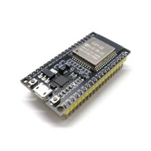

Отладочная плата MH-ET LIVE ESP32 DevKit (Wi-Fi + Bluetooth)
Это отладочная плата на базе семейства ESP32 для разработки устройств с Wi‑Fi и Bluetooth. Обычно используется как удобная платформа для прошивки, тестирования периферии и быстрого прототипирования IoT-проектов.

Документация
Характеристики
Подробнее
Позиция соответствует типовой плате семейства ESP32 DevKit, а по названию MH-ET LIVE ESP32 DevKit канонически её следует отнести к ESP32-DevKitC-типу на базе модуля ESP32-WROOM-32/совместимого модуля ESP32. Такие платы выносят большинство GPIO на гребёнки, имеют USB‑UART интерфейс для прошивки и питания, а также кнопки Reset/Boot для входа в режим загрузки. Плата предназначена для разработки и отладки приложений с беспроводной связью Wi‑Fi и Bluetooth, в том числе для работы с датчиками, реле, дисплеями и другой периферией. На части плат ESP32-DevKitC используются одинаковые сигналы и распиновка с официальной линейкой Espressif, поэтому при подключении важно учитывать ограничения некоторых линий флеш-памяти. Для точного соответствия модификации важно сверять установленный модуль ESP32 и разводку конкретной ревизии платы.